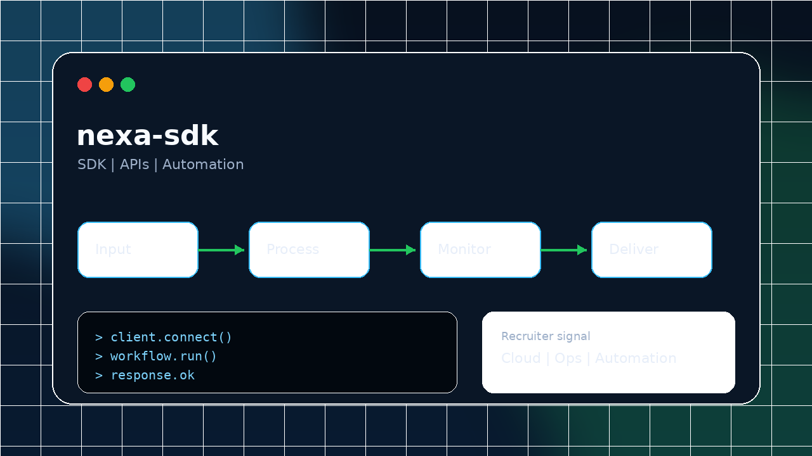
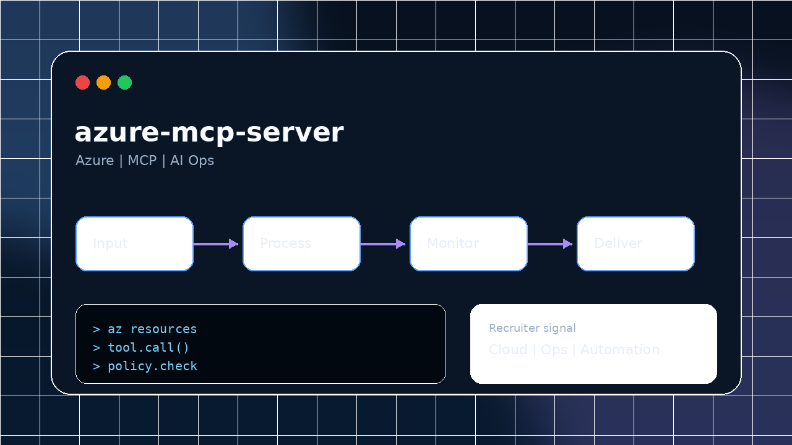
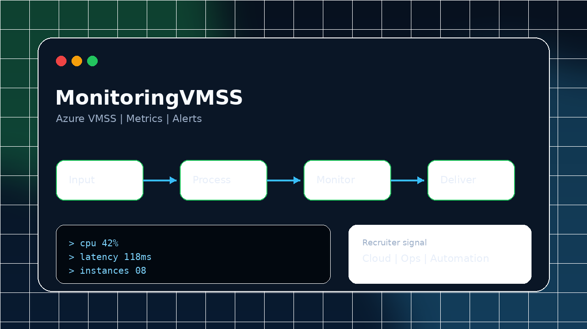
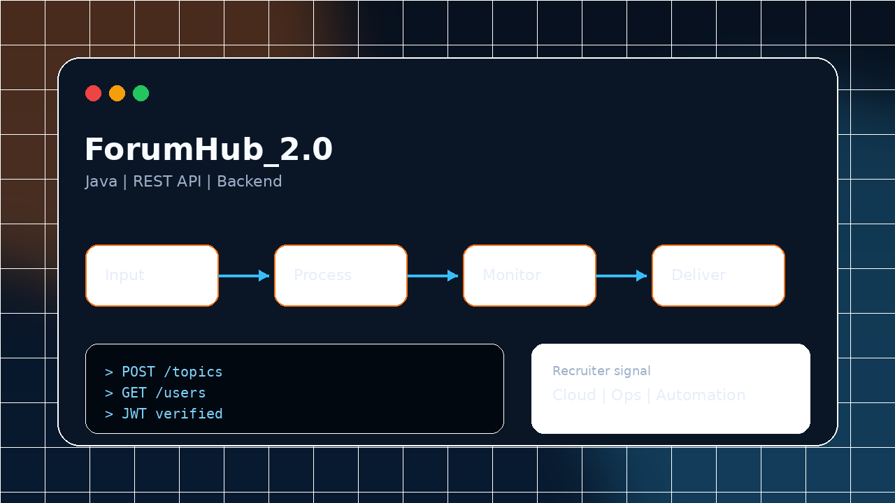
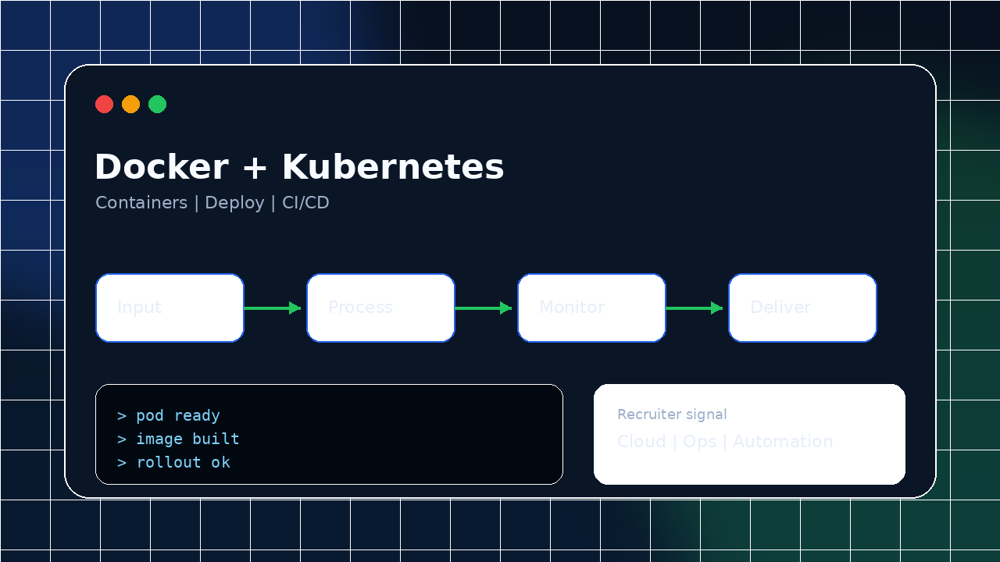
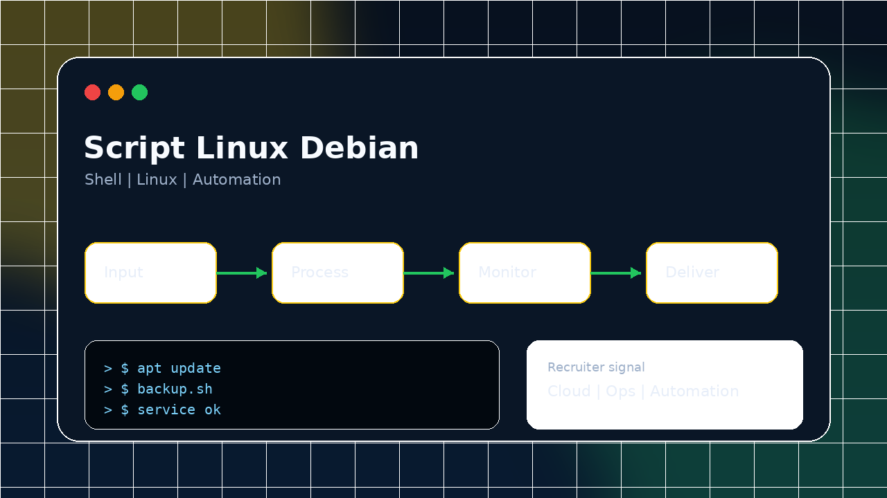

Infraestrutura e cloud
Experiência com ambientes híbridos, Windows, Linux, suporte N2/N3, administração cloud e resolução de problemas em produção com foco em estabilidade.
Azure
AWS
GCP
OCI
Sou Ricardo Santana, profissional de infraestrutura, cloud, segurança operacional e observabilidade. Transformo problemas de suporte e operação em ambientes mais confiáveis, monitoráveis e automatizados, com documentação clara e foco em continuidade de serviço.
Atuo conectando infraestrutura, suporte, observabilidade e segurança para reduzir falhas recorrentes, acelerar diagnósticos e criar rotinas mais previsíveis para times técnicos.
Experiência com ambientes híbridos, Windows, Linux, suporte N2/N3, administração cloud e resolução de problemas em produção com foco em estabilidade.
Atuação com dashboards, alertas, análise de causa raiz e ferramentas que ajudam times a detectar falhas mais cedo e reduzir indisponibilidade.
Uso de scripts, CI/CD, IaC, Docker e Kubernetes para reduzir tarefas manuais, padronizar processos e acelerar entregas com menos risco.
Repositórios públicos que mostram prática em cloud, automação, backend, containers, observabilidade e experimentos com IA aplicada.






Esta seção deixa mais fácil provar consistência e evolução técnica sem depender só de texto longo.
Pós-graduação em Cybersecurity e graduação em Análise e Desenvolvimento de Sistemas.
Azure, Microsoft Cybersecurity Analyst, ISC2 CC, Google Cybersecurity, AWS, GCP, DevOps, Terraform e OCI.
Experiência com sustentação, monitoramento, incidentes, documentação técnica e apoio a times multidisciplinares.
Cloud, Linux, Windows, redes, bancos, containers, observabilidade e automação em um único perfil.
Minha experiência reúne sustentação de ambientes, atendimento técnico, monitoramento, documentação e evolução de processos para apoiar operações mais estáveis.
Um perfil de operação forte precisa resolver o agora sem perder a chance de melhorar o próximo atendimento. É aqui que experiência prática, documentação e automação se encontram.
Investigo incidentes com senso de prioridade, impacto e continuidade, buscando restaurar o serviço e registrar aprendizados.
Tenho perfil prático para investigar, automatizar, registrar decisões técnicas e compartilhar procedimentos com o time.
Transito bem entre suporte, infraestrutura, desenvolvimento e segurança, facilitando alinhamentos em ambientes multidisciplinares.
Estou aberto a oportunidades em cloud, infraestrutura, DevOps, SRE, observabilidade, suporte avançado e segurança operacional.